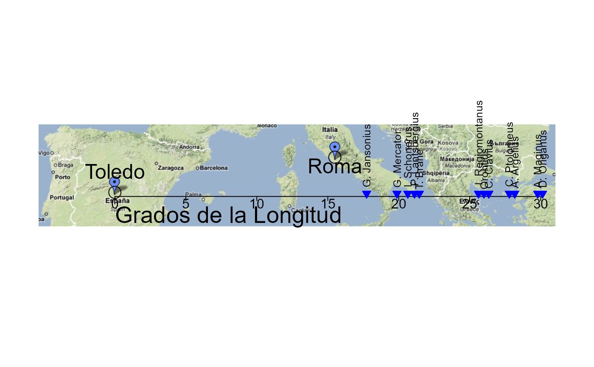

van Langren's Data on Longitude Distance between Toledo and Rome
Langren.RdMichael Florent van Langren (1598-1675) was a Dutch mathematician and astronomer, who served as a royal mathematician to King Phillip IV of Spain, and who worked on one of the most significant problems of his time— the accurate determination of longitude, particularly for navigation at sea.
In order to convince the Spanish court of the seriousness of the problem (often resulting in great losses through ship wrecks), he prepared a 1-dimensional line graph, showing all the available estimates of the distance in longitude between Toledo and Rome, which showed large errors, for even this modest distance. This 1D line graph, from Langren (1644), is believed to be the first known graph of statistical data (Friendly etal., 2010). It provides a compelling example of the notions of statistical variability and bias.
The data frame Langren1644 gives the estimates and other information derived from the
previously known 1644 graph.
It turns out that van Langren produced other versions of this graph, as early as 1628.
The data frame Langren.all gives the estimates derived
from all known versions of this graph.
Format
Langren1644: A data frame with 12 observations on the following 9 variables,
giving determinations of the distance in longitude between Toledo and Rome, from the 1644 graph.
NameThe name of the person giving a determination, a factor with levels
A. Argelius...T. BraheLongitudeEstimated value of the longitude distance between Toledo and Rome
YearYear associated with this determination
LongnameA longer version of the
Name, where appropriate; a factor with levelsAndrea ArgoliChristoph ClaviusTycho BraheCityThe principal city where this person worked; a factor with levels
AlexandriaAmsterdamBambergBolognaFrankfurtHvenLeuvenMiddelburgNurembergPaduaParisRomeCountryThe country where this person worked; a factor with levels
BelgiumDenmarkEgyptFlandersFranceGermanyItalyItalyLatitudeLatitude of this
City; a numeric vectorSourceLikely source for this determination of Longitude; a factor with levels
AstronMapGapA numeric vector indicating whether the
Longitudevalue is below or above the median
Langren.all: A data frame with 61 observations on the following 4 variables,
giving determinations of Longitude between Toledo and Rome from all known versions of van Langren's graph.
AuthorAuthor of the graph, a factor with levels
LangrenLelewelYearYear of publication
NameThe name of the person giving a determination, a factor with levels
Algunos1Algunos2Apianus...SchonerusLongitudeEstimated value of the longitude distance between Toledo and Rome
Details
In all the graphs, Toledo is implicitly at the origin and Rome is located relatively at the value of Longitude
To judge correspondence with an actual map, the positions in (lat, long) are
toledo <- c(39.86, -4.03);
rome <- c(41.89, 12.5)
Source
The longitude values were digitized from images of the various graphs, which may be found on the Supplementary materials page for Friendly etal. (2009).
References
Friendly, M., Valero-Mora, P. and Ulargui, J. I. (2010). The First (Known) Statistical Graph: Michael Florent van Langren and the "Secret" of Longitude. The American Statistician, 64 (2), 185-191. Supplementary materials: http://datavis.ca/gallery/langren/.
Langren, M. F. van. (1644). La Verdadera Longitud por Mar y Tierra. Antwerp: (n.p.), 1644. English translation available at http://datavis.ca/gallery/langren/verdadera.pdf.
Lelewel, J. (1851). Geographie du Moyen Age. Paris: Pilliet, 1851.
Examples
data(Langren1644)
####################################################
# reproductions of Langren's graph overlaid on a map
####################################################
if (require(jpeg, quietly=TRUE)) {
gimage <- readJPEG(system.file("images", "google-toledo-rome3.jpg", package="HistData"))
# NB: dimensions from readJPEG are y, x, colors
gdim <- dim(gimage)[1:2]
ylim <- c(1,gdim[1])
xlim <- c(1,gdim[2])
op <- par(bty="n", xaxt="n", yaxt="n", mar=c(2, 1, 1, 1) + 0.1)
# NB: necessary to scale the plot to the pixel coordinates, and use asp=1
plot(xlim, ylim, xlim=xlim, ylim=ylim, type="n", ann=FALSE, asp=1 )
rasterImage(gimage, 1, 1, gdim[2], gdim[1])
# pixel coordinates of Toledo and Rome in the image, measured from the bottom left corner
toledo.map <- c(131, 59)
rome.map <- c(506, 119)
# confirm locations of Toledo and Rome
points(rbind(toledo.map, rome.map), cex=2)
text(131, 95, "Toledo", cex=1.5)
text(506, 104, "Roma", cex=1.5)
# set a scale for translation of lat,long to pixel x,y
scale <- data.frame(x=c(131, 856), y=c(52,52))
rownames(scale)=c(0,30)
# translate from degrees longitude to pixels
xlate <- function(x) {
131+x*726/30
}
# draw an axis
lines(scale)
ticks <- xlate(seq(0,30,5))
segments(ticks, 52, ticks, 45)
text(ticks, 40, seq(0,30,5))
text(xlate(8), 17, "Grados de la Longitud", cex=1.7)
# label the observations with the names
points(x=xlate(Langren1644$Longitude), y=rep(57, nrow(Langren1644)),
pch=25, col="blue", bg="blue")
text(x=xlate(Langren1644$Longitude), y=rep(57, nrow(Langren1644)),
labels=Langren1644$Name, srt=90, adj=c(-.1, .5), cex=0.8)
par(op)
}
#> Warning: package 'jpeg' was built under R version 4.4.3

### Original implementation using ReadImages, now deprecated & shortly to be removed
if (FALSE) { # \dontrun{
if (require(ReadImages)) {
gimage <- read.jpeg(system.file("images", "google-toledo-rome3.jpg", package="HistData"))
plot(gimage)
# pixel coordinates of Toledo and Rome in the image, measured from the bottom left corner
toledo.map <- c(130, 59)
rome.map <- c(505, 119)
# confirm locations of Toledo and Rome
points(rbind(toledo.map, rome.map), cex=2)
# set a scale for translation of lat,long to pixel x,y
scale <- data.frame(x=c(130, 856), y=c(52,52))
rownames(scale)=c(0,30)
lines(scale)
xlate <- function(x) {
130+x*726/30
}
points(x=xlate(Langren1644$Longitude), y=rep(57, nrow(Langren1644)),
pch=25, col="blue")
text(x=xlate(Langren1644$Longitude), y=rep(57, nrow(Langren1644)),
labels=Langren1644$Name, srt=90, adj=c(0, 0.5), cex=0.8)
}
} # }
### First attempt using ggplot2; temporarily abandonned.
if (FALSE) { # \dontrun{
require(maps)
require(ggplot2)
require(reshape)
require(plyr)
require(scales)
# set latitude to that of Toledo
Langren1644$Latitude <- 39.68
# x/long y/lat
bbox <- c( 38.186, -9.184,
43.692, 28.674 )
bbox <- matrix(bbox, 2, 2, byrow=TRUE)
borders <- as.data.frame(map("world", plot = FALSE,
xlim = expand_range(bbox[,2], 0.2),
ylim = expand_range(bbox[,1], 0.2))[c("x", "y")])
data(world.cities)
# get actual locations of Toledo & Rome
cities <- subset(world.cities,
name %in% c("Rome", "Toledo") & country.etc %in% c("Spain", "Italy"))
colnames(cities)[4:5]<-c("Latitude", "Longitude")
mplot <- ggplot(Langren1644, aes(Longitude, Latitude) ) +
geom_path(aes(x, y), borders, colour = "grey60") +
geom_point(y = 40) +
geom_text(aes(label = Name), y = 40.1, angle = 90, hjust = 0, size = 3)
mplot <- mplot +
geom_segment(aes(x=-4.03, y=40, xend=30, yend=40))
mplot <- mplot +
geom_point(data = cities, colour = "red", size = 2) +
geom_text(data=cities, aes(label=name), color="red", size=3, vjust=-0.5) +
coord_cartesian(xlim=bbox[,2], ylim=bbox[,1])
# make the plot have approximately aspect ratio = 1
windows(width=10, height=2)
mplot
} # }
###########################################
# show variation in estimates across graphs
###########################################
library(lattice)
#> Warning: package 'lattice' was built under R version 4.4.3
graph <- paste(Langren.all$Author, Langren.all$Year)
dotplot(Name ~ Longitude, data=Langren.all)
 dotplot( as.factor(Year) ~ Longitude, data=Langren.all, groups=Name, type="o")
dotplot(Name ~ Longitude|graph, data=Langren.all, groups=graph)
# why the gap?
gap.mod <- glm(Gap ~ Year + Source + Latitude, family=binomial, data=Langren1644)
anova(gap.mod, test="Chisq")
#> Analysis of Deviance Table
#>
#> Model: binomial, link: logit
#>
#> Response: Gap
#>
#> Terms added sequentially (first to last)
#>
#>
#> Df Deviance Resid. Df Resid. Dev Pr(>Chi)
#> NULL 11 16.3006
#> Year 1 1.1207 10 15.1799 0.28977
#> Source 1 3.5482 9 11.6317 0.05961 .
#> Latitude 1 4.9213 8 6.7104 0.02653 *
#> ---
#> Signif. codes: 0 '***' 0.001 '**' 0.01 '*' 0.05 '.' 0.1 ' ' 1
dotplot( as.factor(Year) ~ Longitude, data=Langren.all, groups=Name, type="o")
dotplot(Name ~ Longitude|graph, data=Langren.all, groups=graph)
# why the gap?
gap.mod <- glm(Gap ~ Year + Source + Latitude, family=binomial, data=Langren1644)
anova(gap.mod, test="Chisq")
#> Analysis of Deviance Table
#>
#> Model: binomial, link: logit
#>
#> Response: Gap
#>
#> Terms added sequentially (first to last)
#>
#>
#> Df Deviance Resid. Df Resid. Dev Pr(>Chi)
#> NULL 11 16.3006
#> Year 1 1.1207 10 15.1799 0.28977
#> Source 1 3.5482 9 11.6317 0.05961 .
#> Latitude 1 4.9213 8 6.7104 0.02653 *
#> ---
#> Signif. codes: 0 '***' 0.001 '**' 0.01 '*' 0.05 '.' 0.1 ' ' 1